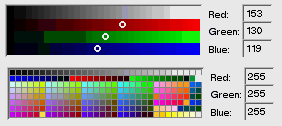

BColorControl¶
A BColorControl object displays an on-screen device that permits users to pick a color.
It reports the color as its current value—an rgb_color data structure stored as a 32-bit
integer. If a model message is provided, it announces each change in value by sending a copy of the
message to a designated target.
When the screen is 8 bits deep, the BColorControl object presents users with a matrix
of the 256 available colors. The user chooses a color by pressing the primary mouse button while the
cursor is over one of the cells in the matrix. Dragging from cell to cell changes the selected
color. The arrow keys can similarly change the selection when the object is the focus view. The
BColorControls value changes each time the selection does.

When the screen is 15, 16, or 32 bits deep, the BColorControl object displays ramps for
each color component. The user changes the current color by modifying a red, green, or blue
component value.
In addition to the color mixer and ramp, a BColorControl has three text fields where
the user can set a color by typing in its red, green, and blue component values. The text fields
(BTextControl objects) are children of the BColorControl.